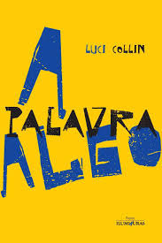

A Palavra Algo

Sobre a obra
“'Algo aqui neste livro se faz, tanto quanto se diz. De que espécie será essa alguma coisa - essa coisa alguma? O que será o mistério 'que reaparece / nesse aqui / sem nem sê-lo'?
Como pode haver tais haveres que nem sequer são, como um pássaro que inadvertidamente transita por um 'curso intransitivo'?
É uma fascinação, A palavra algo, de Luci Collin. Esses poemas fascinam pelo muito que afirmam justamente a partir de uma tenaz negação. O próprio título, bem lido, exprime a ambivalência de um afirmar negando, que parece orientar - ou pelo menos sugerir - a poesia que o leitor tem nas mãos agora. Trata-se da palavra, não de um suposto ente que se possa avistar através dela, existindo independente da nomeação. Mas o resultado de uma escrita dessa forma obstinada é por fim a mais generosa abertura: todo um mundo que se acrescenta ao mundo que só assim pode ser capturado. Essa palavra que se imprime, 'flama na folha de rosto', impressiona por si mesma.
Mais do que a beleza que há, está empenhada em buscar 'algo da beleza que pode ser'. É o instrumento de um Prometeu à parte, que com ela rouba 'algo de fogo' com que chegue a avivar-se. Mas sua condição é negativa, é 'sem': implica certo exílio, certa rareza, 'algo de fenda e de artifício'. Para tamanho afã existe um lugar: aqui. Volta e meia a poeta relembra o leitor de seus algures, de tudo o que desfila na poesia, onde o chão é linguagem, 'os passos da dança são um jorro / as falas são manjar', e onde se reedita 'o script que a vida assina'.
O poeta - um editor, ou reeditor, 'galgo acorrentado / algo afônico', uma espécie de alter ego da vida. Não é tão dele a autoria: 'a tinta borra / hesita / ela mesma tem lapsos / e talvez falsifique as cenas'. Esse 'aqui' da poesia de Luci Collin é esse 'talvez' que ela insinua, movediço e plástico, desprotegido e imune, mas sendo 'o que mais / redunda / sobeja / remanesce'. Só assim é possível considerar, ao ver a diva séria, que ela tenha 'talvez um molar doendo', com a surpresa de um humor muito característico, que é uma das marcas mais felizes da autora.
A oscilação, seu hesitar entre o veraz e o verossímil, inscreve a poesia na ordem ambígua e às vezes perturbadora do ficcional. O que é 'sem' também se faz 'como se'. Essas 'palavras assustadiças' são flores (outro já disse que seriam fezes) que a poeta veio pronunciar 'como se / um beijo' são 'flores excêntricas' que ela veio prestar 'como se / um salmo' são 'certezas indivisas' que ela veio declarar 'como se / um lírio'. Desde o início, se a escrita pode estar falsificando cenas, 'o poeta finge', numa proposição em que o eu afinal não é senão 'resto', um restar, que também significa alguma permanência mais perene nesta vida. Assim emerge no poema 'o âmago desimpedido / de um esplêndido / algo' que talvez não estivesse aqui antes de ela modelar seu 'como se'. Fingidamente é ele que ilumina todas as coisas e todos os bichos que interagem nestas páginas, 'à luz de algo / que se vê / aqui'. Essa iluminação - tão bela, às vezes até euforizante! - vem explicitar uma esperança só da poesia ('que talvez esteja num será').
É a confiança que Luci Collin reativa na convergência entre a vida e a escrita mesmo sem nenhuma imediaticidade que reenvie esse algo daqui a qualquer objeto estável fora da linguagem, que aqui só refere à medida que impõe uma realidade própria, insubordinável à nossa ânsia de controle sobre o mundo e sobre a representação dele que possamos projetar. Por isso o gume afiado da poesia de Luci Collin é bálsamo também, sem deixar de ser cortante.'”
Sérgio Alcides
Dados da edição
- Editora
- Iluminuras
- ISBN
- 9788573215274
- Páginas
- 112
- Lançamento da edição
- Não informado na fonte
Fonte
As informações foram copiadas e coladas do site da editora: Iluminuras.